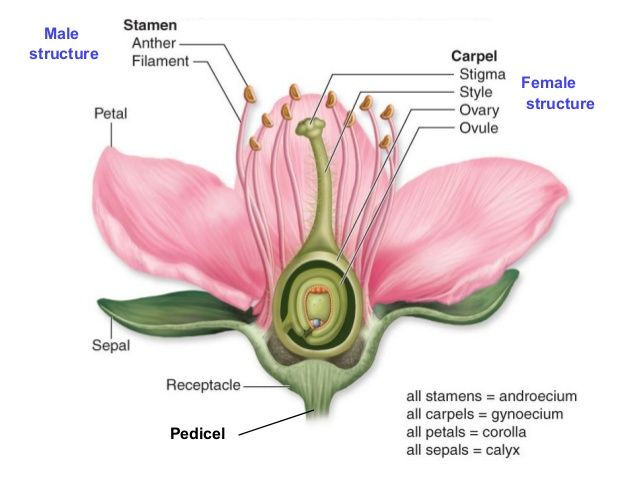

🌸 Parts of a Perfect Flower

This diagram illustrates the main parts of a perfect flower. Each structure works together to allow pollination, fertilization, and the production of seeds and fruits.
Understanding these parts helps explain how flowers reproduce and why pollinators like bees and butterflies are essential.
| Flower Part | Function |
|---|---|
| Petal | Attracts pollinators using color and scent |
| Sepal | Protects the flower bud before it blooms |
| Stamen | Male part that produces pollen |
| Anther | Produces pollen grains |
| Filament | Supports the anther |
| Pistil (Carpel) | Female part that contains the ovary |
| Stigma | Receives pollen during pollination |
| Ovary | Holds ovules that become seeds |
🌿 Fun Fact: Did you know that flowers are actually the reproductive organs of flowering plants?
In fact, every flower is designed to attract pollinators like bees, butterflies, or even bats — not just to look pretty! Without flowers, fruits and seeds wouldn't exist.